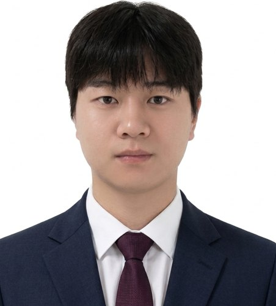
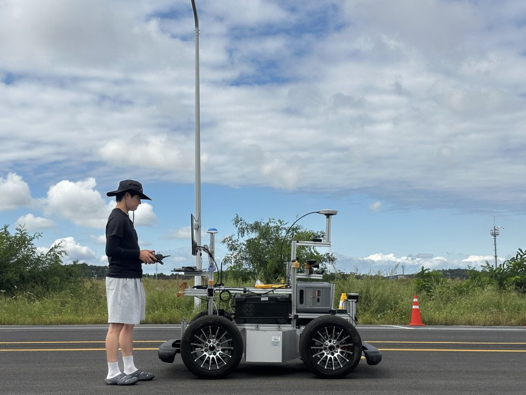
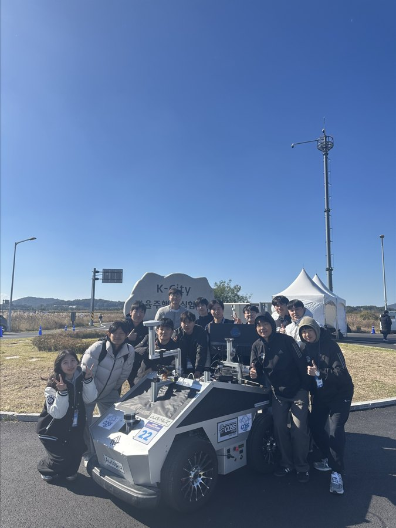
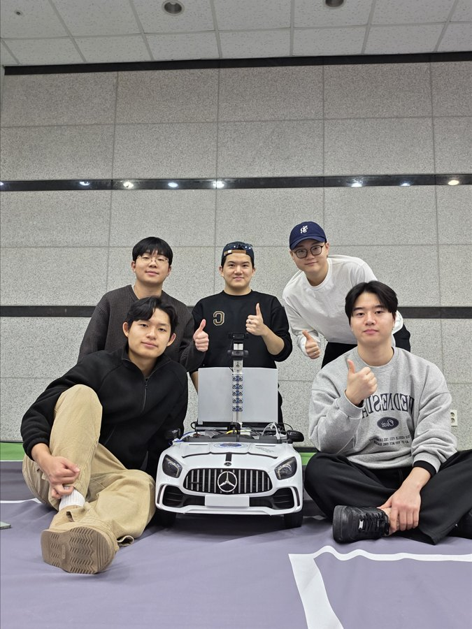
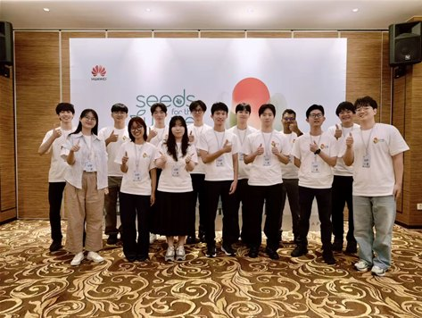
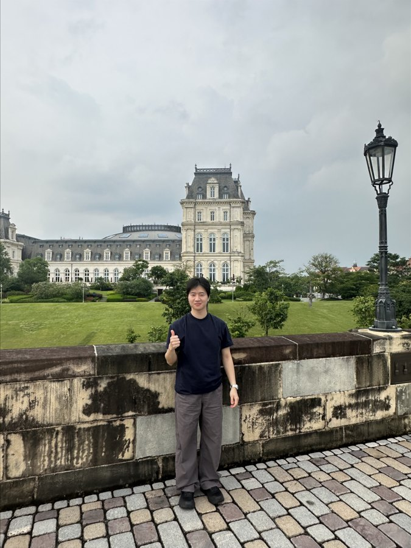
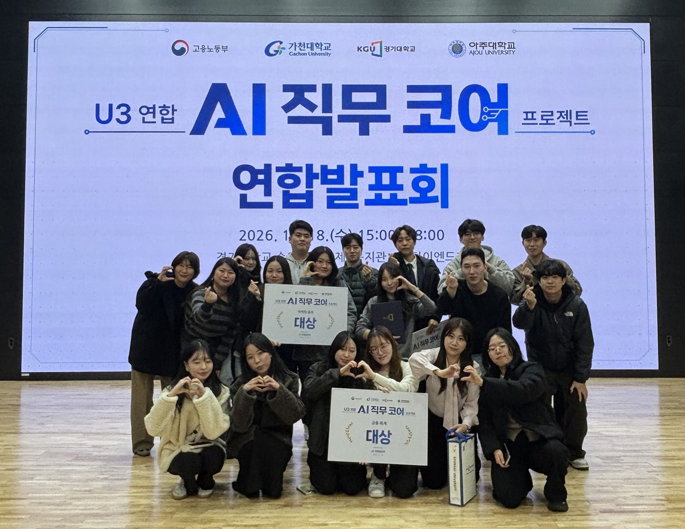

Gu Dong Yeol구동열
Education
- Ajou University, Dept. of Mobility Engineering
2023.03 – 2027.02 (expected) - GPA 4.25 / 4.5 (major 4.31)
Relevant Coursework
- Automatic Control, Electric Motor Control, Autonomous Vehicle Engineering
- Hybrid Vehicle Engineering, Computer Systems
- Logic Circuits, Logic Circuits Lab
Career Interests
- Autonomous driving · ADAS control software development
- Vehicle SW verification & evaluation (simulation, on-road testing)
- Embedded SW for vehicle controllers

Featured Project 1: 2026 Gyeonggi-do University Autonomous Driving Competition
A self-driving car converted from a children's ride-on vehicle completed all four tasks: lane driving, obstacle avoidance, traffic lights, and autonomous parking.
- Period
- 2025.10 – 2026.02
- Team
- AJOU NICE, 5 members
- Role
- Autonomous parking planner (sole designer and implementer), low-level steering controller, communication fail-safe
- Stack
- ROS1 · Python · C++ · Arduino · 2D LiDAR · Camera
- Result
- Lane driving ✓ · Obstacle avoidance ✓ · Traffic light ✓ · Autonomous parking ✓ (all 4 missions passed, 0 mission penalty points)
Top Excellence Award · Director's Award of AICT · 2nd of 20 teams

Technical portfolio slides (written in Korean)
Featured Project 2: 5th International University Student EV Autonomous Driving Competition
On a 1/5-scale EV, drove the lane, GPS, and cone sections with LiDAR+IMU localization (LIO-SAM) alone and completed the entire final course.
- Period
- 2026.02 – 2026.03
- Team
- AJOU NICE, 5 members
- Role
- Pure Pursuit controller calibration, GPS ↔ LIO-SAM coordinate alignment, planning-parameter calibration, low-level steering controller
- Stack
- ROS1 · Python · C++ · LIO-SAM · 3D LiDAR · IMU · Dual RTK GPS
- Result
- Completed the entire final course, including lane, GPS, and cone sections (driven twice, forward and reverse)

Technical portfolio slides (written in Korean)
From autonomous driving competitions to industry analysis and manufacturing AI
Competitions, projects, and analysis work outside the featured projects.
University Student Creative Mobility Competition
Completed autonomous parking, obstacle avoidance, lane keeping, and traffic-light missions over a 1 km course with a half-scale ERP42. Planning & control team member
- Confirmed through experiments that IMU heading accumulates bias and noise and that RTK fix is unstable; developed an algorithm that corrects IMU heading using changes in global coordinates during RTK-fix intervals
- Tracked the GPS reference path with Stanley, set target speeds reflecting segment curvature, missions, and signal timing, and tuned with RMSE
- Reduced lateral oscillation at high speed with yaw-rate-limiting post-processing
- Agreed on a 2D cone-center coordinate interface with the perception team and implemented diagonal/parallel parking decisions and path generation → completed the full course
Welding-Equipment AI Maintenance Support System
An MVP that detects anomalies from welding-gun sensor data with ML and links them to inspection information in the manufacturer's manuals
- Role: designed and built a manual-based knowledge graph (Neo4j); defined fault type–cause–inspection–action relations
- Graph RAG pipeline that queries the graph with the ML-predicted fault type and generates LLM answers with LangChain
- Post-processing that checks whether cited documents and pages are actual retrieval evidence
- Weekly requirement and architecture reviews; biweekly mentoring with industry practitioners
Ajou Hidden Champion Student Discovery Team, 11th Cohort Presentation
Presented an in-depth analysis of Telechips, an automotive fabless semiconductor company
- Presented to an audience of 100+ at the final among 20+ teams and won the Grand Prize
- Selected Telechips; financial, SWOT, PEST, and 3C analysis
- Surveyed the product portfolio, including Cockpit SoC, ADAS AP, and Automotive MCU
- On-site HR team interview: learned the expansion strategy from infotainment to ADAS and vehicle networking, and confirmed the industry trend from distributed MCUs to HPC-integrated control with the SDV transition
Timeline
Entered Ajou University, Dept. of Mobility Engineering Academics
Ajou Hidden Champion Student Discovery Team, 11th Cohort Presentation Grand Prize
In-depth analysis of Telechips, an automotive fabless semiconductor company; 1st among 20+ teams

2025 University Student Creative Mobility Competition Finalist
Hosted by the Ministry of Land, Infrastructure and Transport and organized by the Korea Transportation Safety Authority. 1 km autonomous driving with a half-scale ERP42; as a planning & control team member, developed parking logic and a path-tracking controller; completed the full course


Compose Coffee Work experience
Part-time job · beverage preparation, floor management
Vice President, Mobility Study Group 'AUTOPIA' On-campus
Planned and taught a seminar on 'Developing autonomous driving logic with ROS' for freshmen; supervised team LKAS implementation labs
Undergraduate Intern, Ajou University VIC Lab Research lab
Ran autonomous driving scenario tests on an Avante CN7 and collected sensor data (rosbag); presented Waymo EMMA at a joint paper seminar of three labs; developed technology for autonomous driving competitions
2026 Gyeonggi-do University Autonomous Driving Competition Top Excellence Award
Autonomous vehicle built on a children's electric ride-on car. In charge of the autonomous parking planner, low-level steering controller, and communication fail-safe (Featured Project 1)

5th International University Student EV Autonomous Driving Competition Completed
Organized by the International Electric Vehicle Expo (IEVE). On top of LiDAR+IMU SLAM-based localization, handled Pure Pursuit calibration, GPS ↔ LIO-SAM alignment, planning parameters, and the low-level steering controller (Featured Project 2)


Assistant Instructor, AICT Work experience
Supported hands-on autonomous-vehicle building classes for high-school students, plus 3D printer and CAD sessions
Huawei 'Seeds for the Future 2026' International exchange
Represented Ajou University in a 9-day program in Shenzhen and Dongguan, China. In a Korea–China–Japan student team, attended lectures on AI, 5G, and cloud, held English discussions, and visited Huawei and DJI


Welding-Equipment AI Maintenance Support System Excellence Award
Ministry of Employment and Labor U3 Alliance AI Job Core Project. ML anomaly detection on welding-gun sensors + Graph RAG over maintenance manuals. In charge of building the knowledge graph and the LLM answer pipeline

Expected graduation, Ajou University Academics
GPA 4.25 / 4.5 (major 4.31)
Education, Experience, Training, Certifications
Education
| 2023.03 – 2027.02 | Ajou University, Dept. of Mobility Engineering Expected graduation · GPA 4.25 / 4.5 (major 4.31) · 2nd in department |
Experience
| 2025.05 – 2026.06 | Ajou University VIC Lab undergraduate intern On-road scenario tests and sensor data collection on an Avante CN7, joint paper seminar presentation, technology development for autonomous driving competitions |
| 2026.06 – 07 | Advanced Institute of Convergence Technology (AICT) assistant instructor Hands-on autonomous-vehicle building classes for high-school students; 3D printer and CAD session support |
| 2025.03 – 07 | Compose Coffee part-time job Beverage preparation, floor management |
Certifications & Languages
| 2026.11.20 | ADsP Advanced Data Analytics Semi-Professional | Korea Data Agency |
| 2026.11.14 | AICE Associate | KT · The Korea Economic Daily |
| 2026.04.11 | TOEIC Speaking IH (140) | ETS |
| 2023.08 | Driver's license, Class 2 Standard (Korea) |
Military Service
| 2021.01 – 2022.07 | Republic of Korea Army, Sergeant; discharged upon completion of service |
Skills
Training
| 2024.01 – 2024.06 | EV Fundamentals · HEV/PHEV Fundamentals | Hyundai NGV |
| 2025.02 | ROS2 training with Limo PRO | Ajou Univ. Future Automotive Program · Chungbuk National Univ. |
| 2025.02.10 – 02.11 | Future-vehicle DX design with Siemens AMESIM | Ajou Univ. Future Automotive Program · Chungbuk National Univ. |
| 2025.02.12 – 02.14 | Advanced AUTOSAR training (Mobilgene hands-on) | Ajou Univ. Future Automotive Program · Chungbuk National Univ. |
| 2025.07 | CarMaker User Training | IPG Automotive Korea |
| 2025.09 | MATLAB/Simulink Onramp | MathWorks |
| 2026.04 – 2026.06 | H-Mobility Class, Autonomous Driving Control Track | Hyundai Motor Group |
| 2026.08 | Measurement, Control, and Automation with LabVIEW | Ajou Univ. Future Automotive Program |
| 2026.10 – 2026.11 | Automotive Functional Safety Standard: ISO 26262 Basics | Ajou Univ. Future Automotive Program |
| 2026.11 | Vehicle SW Development on AUTOSAR Classic Platform (CP) | Hyundai NGV · Gyeonggi Future Mobility Center |
Awards
| 2024.10.02 | Ajou Hidden Champion Student Discovery Team, 11th Cohort Presentation Grand Prize | Ajou Univ. RISE Project Group |
| 2026.02.11 | 2026 Gyeonggi-do University Autonomous Driving Competition Top Excellence Award | AICT |
| 2026.11.18 | U3 Alliance AI Job Core Project Joint Presentation · Welding-Equipment AI Maintenance Support System Excellence Award | Ministry of Employment and Labor · Gachon Univ. · Kyonggi Univ. · Ajou Univ. |
International Experience
| 2026.08.23 – 31 | Huawei Seeds for the Future 2026 · Training in Shenzhen & Dongguan, China Participated as Ajou University's representative in Huawei's global ICT talent program; attended lectures on AI, 5G, and cloud and held English discussions in a Korea–China–Japan student team; visited Huawei and DJI |